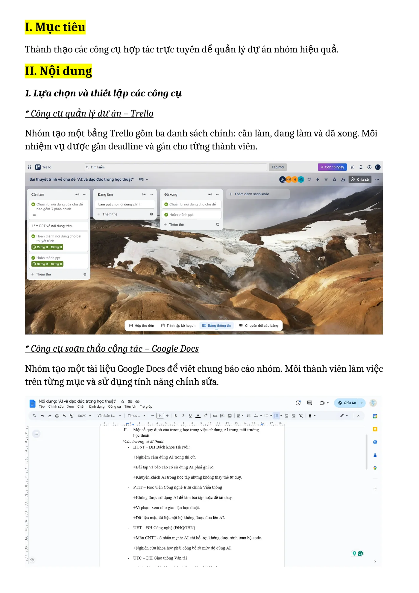
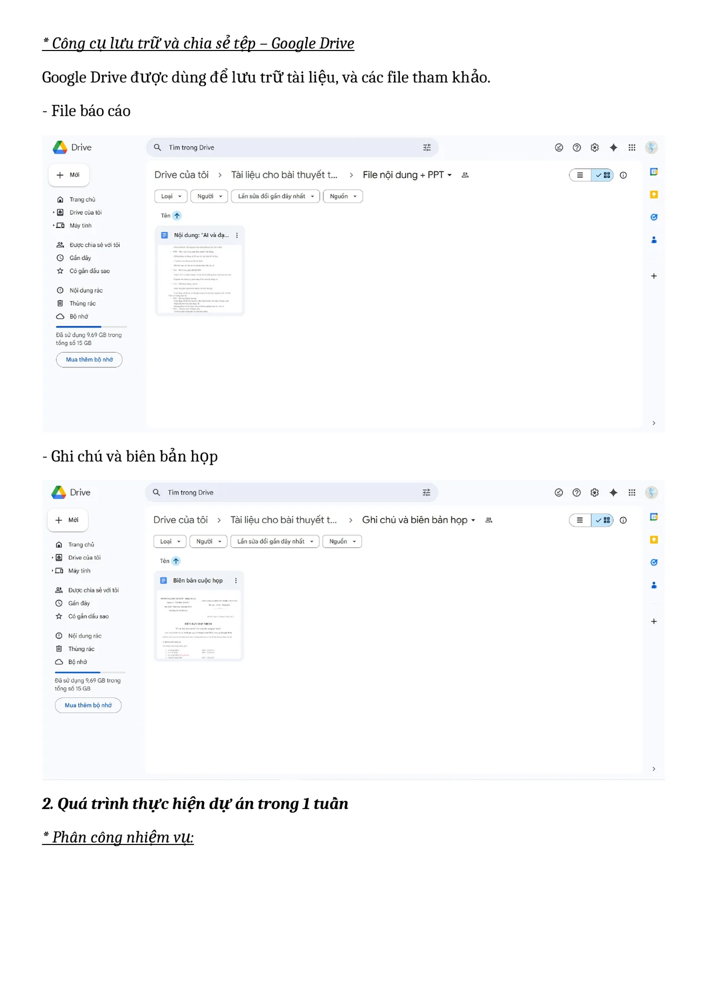
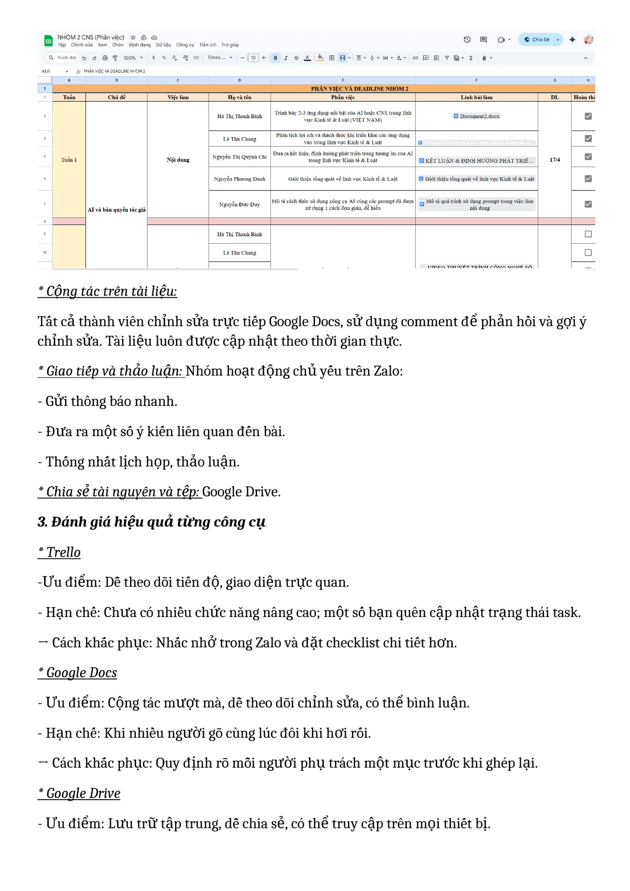

Năng lực cần hình thành
Thành thạo các công cụ hợp tác trực tuyến và nâng cao khả năng quản lý, điều phối công việc trong quá trình tham gia dự án nhóm.
- Sử dụng công cụ quản lý dự án để nhận nhiệm vụ và theo dõi tiến độ.
- Đóng góp, chỉnh sửa và phản hồi trực tiếp trên tài liệu cộng tác.
- Tổ chức, lưu trữ và chia sẻ tài liệu trong không gian làm việc chung.
- Chủ động trao đổi và phối hợp với các thành viên trong môi trường số.
- Ghi lại quá trình sử dụng công cụ thông qua hình ảnh và báo cáo.
Tổ chức công việc và phối hợp trực tuyến
Trong một tuần, nhóm sử dụng nhiều công cụ trực tuyến để quản lý nhiệm vụ, cùng xây dựng nội dung, lưu trữ tài liệu và trao đổi thông tin. Mỗi công cụ đảm nhiệm một vai trò riêng nhưng được kết hợp trong cùng một quy trình làm việc.
Quản lý nhiệm vụ bằng Trello
Theo dõi các nhiệm vụ được giao, người phụ trách, thời hạn hoàn thành và trạng thái Cần làm, Đang làm, Đã xong.
Cộng tác trên Google Docs
Cùng soạn thảo và chỉnh sửa nội dung, theo dõi lịch sử thay đổi, sử dụng bình luận để góp ý và phản hồi giữa các thành viên.
Lưu trữ trên Google Drive
Lưu báo cáo, hình ảnh, tài liệu tham khảo, ghi chú và các tệp liên quan trong thư mục dùng chung của nhóm.
Trao đổi qua Zalo
Cập nhật tiến độ, thống nhất lịch làm việc, phản hồi thông tin và phối hợp xử lý các vấn đề phát sinh.
Quy trình phối hợp và hoàn thành công việc
Bước 1 · Xác định yêu cầu
Nhóm đọc yêu cầu, xác định nội dung cần hoàn thành và thống nhất thời gian thực hiện.
Bước 2 · Phân công nhiệm vụ
Công việc được chia cho từng thành viên, gắn thời hạn và theo dõi tiến độ thông qua bảng Trello.
Bước 3 · Xây dựng nội dung
Các thành viên tìm kiếm tài liệu, viết nội dung, chỉnh sửa trên Google Docs và phản hồi các bình luận.
Bước 4 · Lưu trữ và trao đổi
Các tệp được sắp xếp trên Google Drive, đồng thời nhóm cập nhật tiến độ và trao đổi công việc qua Zalo.
Bước 5 · Kiểm tra và hoàn thiện
Nhóm rà soát nội dung, kiểm tra hình ảnh, báo cáo và các sản phẩm trước khi hoàn thành.
Tổ chức và tham gia cuộc họp trực tuyến
Cuộc họp trực tuyến được tổ chức để các thành viên trình bày nội dung, trao đổi ý kiến, phản hồi và thống nhất những công việc cần hoàn thành.
Hoạt động cho thấy quá trình chuẩn bị nội dung, phân công vai trò, trình bày ý kiến, lắng nghe và phối hợp giữa các thành viên trong môi trường số.
Hình ảnh sử dụng các công cụ trực tuyến
Các hình ảnh dưới đây thể hiện quá trình quản lý nhiệm vụ, chỉnh sửa nội dung, lưu trữ tài liệu và theo dõi tiến độ trong dự án nhóm.
Nhấn vào từng ảnh để xem kích thước lớn.



Kết quả đạt được
- Công việc được phân chia rõ ràng và theo dõi trực quan trên Trello.
- Các thành viên có thể cùng chỉnh sửa và đóng góp nội dung trên Google Docs.
- Tài liệu được lưu tập trung và có thể truy cập trên nhiều thiết bị.
- Việc trao đổi qua Zalo giúp nhóm xử lý kịp thời các vấn đề phát sinh.
- Cuộc họp trực tuyến giúp các thành viên trao đổi và thống nhất công việc nhanh hơn.
- Nhóm hoàn thành báo cáo, hình ảnh và các nội dung theo kế hoạch.
Hạn chế trong quá trình thực hiện
- Lịch học của các thành viên khác nhau nên khó thống nhất thời gian làm việc chung.
- Một số nhiệm vụ chưa được cập nhật kịp thời trên Trello.
- Việc chỉnh sửa cùng lúc trên Google Docs đôi khi làm thay đổi bố cục tài liệu.
- Chất lượng đường truyền mạng có thể ảnh hưởng đến quá trình trao đổi trực tuyến.
Bài học rút ra và hướng cải thiện
Qua quá trình thực hiện, mình nhận thấy các công cụ số chỉ phát huy hiệu quả khi mỗi thành viên hiểu rõ trách nhiệm, chủ động cập nhật tiến độ và tuân thủ quy ước chung. Việc kết hợp Trello, Google Docs, Google Drive, Zalo và họp trực tuyến giúp quá trình phối hợp trở nên rõ ràng và linh hoạt hơn.
Cách cải thiện trong các dự án tiếp theo
- Mỗi nhiệm vụ nên có một người chịu trách nhiệm chính.
- Sử dụng checklist và nhãn ưu tiên trong từng thẻ Trello.
- Đặt thời hạn kiểm tra tiến độ trước ngày nộp chính thức.
- Thống nhất cấu trúc thư mục Google Drive ngay từ đầu.
- Sử dụng bình luận và chế độ đề xuất để kiểm soát nội dung chỉnh sửa.
- Duy trì một thời điểm cập nhật tiến độ cố định để tránh bỏ sót nhiệm vụ.
- Ghi lại kết luận và phân công công việc sau mỗi lần trao đổi.
Báo cáo quá trình thực hiện
Báo cáo là sản phẩm trình bày chi tiết quá trình sử dụng Trello, Google Docs, Google Drive và Zalo, hiệu quả của từng công cụ, những khó khăn khi phối hợp nhóm và cách giải quyết.
Trường hợp trình duyệt không hiển thị khung xem trước, có thể sử dụng nút mở báo cáo PDF.